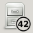

| Top |
Functions
| GIcon * | gtk_numerable_icon_new () |
| GIcon * | gtk_numerable_icon_new_with_style_context () |
| GIcon * | gtk_numerable_icon_get_background_gicon () |
| void | gtk_numerable_icon_set_background_gicon () |
| const gchar * | gtk_numerable_icon_get_background_icon_name () |
| void | gtk_numerable_icon_set_background_icon_name () |
| gint | gtk_numerable_icon_get_count () |
| void | gtk_numerable_icon_set_count () |
| const gchar * | gtk_numerable_icon_get_label () |
| void | gtk_numerable_icon_set_label () |
| GtkStyleContext * | gtk_numerable_icon_get_style_context () |
| void | gtk_numerable_icon_set_style_context () |
Properties
| GIcon * | background-icon | Read / Write |
| gchar * | background-icon-name | Read / Write |
| gint | count | Read / Write |
| gchar * | label | Read / Write |
| GtkStyleContext * | style-context | Read / Write |
Description
GtkNumerableIcon is a subclass of GEmblemedIcon that can show a number or short string as an emblem. The number can be overlayed on top of another emblem, if desired.
It supports theming by taking font and color information
from a provided GtkStyleContext; see
gtk_numerable_icon_set_style_context().
Typical numerable icons: 
Functions
gtk_numerable_icon_new ()
GIcon *
gtk_numerable_icon_new (GIcon *base_icon);
gtk_numerable_icon_new has been deprecated since version 3.14 and should not be used in newly-written code.
Creates a new unthemed GtkNumerableIcon.
Since 3.0
gtk_numerable_icon_new_with_style_context ()
GIcon * gtk_numerable_icon_new_with_style_context (GIcon *base_icon,GtkStyleContext *context);
gtk_numerable_icon_new_with_style_context has been deprecated since version 3.14 and should not be used in newly-written code.
Creates a new GtkNumerableIcon which will themed according
to the passed GtkStyleContext. This is a convenience constructor
that calls gtk_numerable_icon_set_style_context() internally.
Since 3.0
gtk_numerable_icon_get_background_gicon ()
GIcon *
gtk_numerable_icon_get_background_gicon
(GtkNumerableIcon *self);
gtk_numerable_icon_get_background_gicon has been deprecated since version 3.14 and should not be used in newly-written code.
Returns the GIcon that was set as the base background image, or
NULL if there’s none. The caller of this function does not own
a reference to the returned GIcon.
Since 3.0
gtk_numerable_icon_set_background_gicon ()
void gtk_numerable_icon_set_background_gicon (GtkNumerableIcon *self,GIcon *icon);
gtk_numerable_icon_set_background_gicon has been deprecated since version 3.14 and should not be used in newly-written code.
Updates the icon to use icon
as the base background image.
If icon
is NULL, self
will go back using style information
or default theming for its background image.
If this method is called and an icon name was already set as
background for the icon, icon
will be used, i.e. the last method
called between gtk_numerable_icon_set_background_gicon() and
gtk_numerable_icon_set_background_icon_name() has always priority.
Since 3.0
gtk_numerable_icon_get_background_icon_name ()
const gchar *
gtk_numerable_icon_get_background_icon_name
(GtkNumerableIcon *self);
gtk_numerable_icon_get_background_icon_name has been deprecated since version 3.14 and should not be used in newly-written code.
Returns the icon name used as the base background image,
or NULL if there’s none.
Since 3.0
gtk_numerable_icon_set_background_icon_name ()
void gtk_numerable_icon_set_background_icon_name (GtkNumerableIcon *self,const gchar *icon_name);
gtk_numerable_icon_set_background_icon_name has been deprecated since version 3.14 and should not be used in newly-written code.
Updates the icon to use the icon named icon_name
from the
current icon theme as the base background image. If icon_name
is NULL, self
will go back using style information or default
theming for its background image.
If this method is called and a GIcon was already set as
background for the icon, icon_name
will be used, i.e. the
last method called between gtk_numerable_icon_set_background_icon_name()
and gtk_numerable_icon_set_background_gicon() has always priority.
Since 3.0
gtk_numerable_icon_get_count ()
gint
gtk_numerable_icon_get_count (GtkNumerableIcon *self);
gtk_numerable_icon_get_count has been deprecated since version 3.14 and should not be used in newly-written code.
Returns the value currently displayed by self
.
Since 3.0
gtk_numerable_icon_set_count ()
void gtk_numerable_icon_set_count (GtkNumerableIcon *self,gint count);
gtk_numerable_icon_set_count has been deprecated since version 3.14 and should not be used in newly-written code.
Sets the currently displayed value of self
to count
.
The numeric value is always clamped to make it two digits, i.e.
between -99 and 99. Setting a count of zero removes the emblem.
If this method is called, and a label was already set on the icon,
it will automatically be reset to NULL before rendering the number,
i.e. the last method called between gtk_numerable_icon_set_count()
and gtk_numerable_icon_set_label() has always priority.
Since 3.0
gtk_numerable_icon_get_label ()
const gchar *
gtk_numerable_icon_get_label (GtkNumerableIcon *self);
gtk_numerable_icon_get_label has been deprecated since version 3.14 and should not be used in newly-written code.
Returns the currently displayed label of the icon, or NULL.
Since 3.0
gtk_numerable_icon_set_label ()
void gtk_numerable_icon_set_label (GtkNumerableIcon *self,const gchar *label);
gtk_numerable_icon_set_label has been deprecated since version 3.14 and should not be used in newly-written code.
Sets the currently displayed value of self
to the string
in label
. Setting an empty label removes the emblem.
Note that this is meant for displaying short labels, such as roman numbers, or single letters. For roman numbers, consider using the Unicode characters U+2160 - U+217F. Strings longer than two characters will likely not be rendered very well.
If this method is called, and a number was already set on the
icon, it will automatically be reset to zero before rendering
the label, i.e. the last method called between
gtk_numerable_icon_set_label() and gtk_numerable_icon_set_count()
has always priority.
Since 3.0
gtk_numerable_icon_get_style_context ()
GtkStyleContext *
gtk_numerable_icon_get_style_context (GtkNumerableIcon *self);
gtk_numerable_icon_get_style_context has been deprecated since version 3.14 and should not be used in newly-written code.
Returns the GtkStyleContext used by the icon for theming,
or NULL if there’s none.
Returns
a GtkStyleContext, or NULL.
This object is internal to GTK+ and should not be unreffed.
Use g_object_ref() if you want to keep it around.
[transfer none]
Since 3.0
gtk_numerable_icon_set_style_context ()
void gtk_numerable_icon_set_style_context (GtkNumerableIcon *self,GtkStyleContext *style);
gtk_numerable_icon_set_style_context has been deprecated since version 3.14 and should not be used in newly-written code.
Updates the icon to fetch theme information from the given GtkStyleContext.
Since 3.0
Property Details
The “background-icon†property
“background-icon†GIcon *
The icon for the number emblem background.
Flags: Read / Write
The “background-icon-name†property
“background-icon-name†gchar *
The icon name for the number emblem background.
Flags: Read / Write
Default value: NULL
The “count†property
“count†gint
The count of the emblem currently displayed.
Flags: Read / Write
Allowed values: [-99,99]
Default value: 0
The “label†property
“label†gchar *
The label to be displayed over the icon.
Flags: Read / Write
Default value: NULL
The “style-context†property
“style-context†GtkStyleContext *
The style context to theme the icon appearance.
Flags: Read / Write